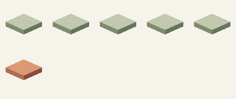

01 / tokens
What is a token?
How text goes in, and the next piece comes out.
A text-generating language model works with pieces called tokens. A piece might be a word, part of a word, punctuation or a space.
Interactive teaching illustration · runs in your browser, no live model
00 / tokens
Start with something small.
Real tokenization / cl100k_base · tiktoken 0.14.0
The tokenizer splits the text, then looks up an ID for each piece. The IDs are labels in a vocabulary, not measurements of meaning.
Here, · marks a space. With this tokenizer, “unhappiness” splits into “un” + “h” + “appiness”. A token is not always a word.
Step through the interactive below. The worked examples in sections 01–04 stay fixed for reference.
1 / 5 · Tokenize the text
How to choose a token
Changing the rule or seed resets the toy. Sampling is reproducible, not a model prediction. If “all other tokens” is chosen, this limited fixture stops rather than inventing a token.
Reduced motion is on. Use Next step to advance at your own pace.
The cat sat on the
- The ID 791
- ·cat ID 8415
- ·sat ID 7731
- ·on ID 389
- ·the ID 279
01 / turning labels into numbers
An ID becomes a list of numbers.
Each token ID selects a learned embedding: a vector of numbers, set during training, that the model can work with.
·cat / 8415 → [-0.9, -0.2, 0.5, -0.7, 0.0, 0.7]
Copy this stored row
One small box = one number. Six boxes = one token’s vector, not six layers.
One row for each piece
The IDs select rows from a stored table. These are the rows needed for our text; the full vocabulary table is much larger.
The / ID 791
·cat / ID 8415
·sat / ID 7731
·on / ID 389
·the / ID 279
− negative 0 zero + positive row we are following
Component numbers are positions in the vector, not named ideas.
One row: a token’s starting representation. Many rows: a table for the pieces in our text.
A tensor is an array, not a machine.
A vector is a one-dimensional tensor; this table is two-dimensional. Models use larger arrays too. The model also keeps track of where each piece sits, so the same piece in a different spot isn't treated as the same.
02 / putting the pieces in context
The numbers change. The text stays.
Layers transform the representations using the earlier context — the text so far — and learned weights. The same word can end up represented differently in a different sentence.
Following ·the / ID 279
Starting row · same six positions throughout
A Gather context from the rows so far
This row can receive information from earlier pieces and itself—not future pieces. The percentages below are this example's fixed recipe, not learned attention scores.
weighted rows one six-number mixture
Weighted mixture
Halve that mixture to make an update, then add it to the starting row.
Starting row
+ context update
≈ row with context
B Transform the numbers within this row
Now mix the six components within each row. The same fixed transformation is used for every row; this operation does not gather other rows.
Row with context
+ within-row update
≈ updated row
Both operations add an update rather than replace the row. In a conventional transformer, operations like these repeat through many layers.
− negative 0 zero + positive row we are following
Values above are rounded to three decimals. Positions stay fixed: color shows sign, not a moving piece or a named concept.
Inspect the exact calculations
Choose a component. Its position stays the same from input to output. Stored arithmetic is rounded to ten decimal places. All six components use the same stated recipe; this is a transparent teaching calculation, not trained attention or a model prediction.
Check component 1
For each allowed row, multiply its component 1 by its weight. Add those contributions. Future rows have weight zero.
| Piece | Weight | Value | Product |
|---|---|---|---|
| The | 0.0625 | 0 | 0 |
| ·cat | 0.0625 | -0.9 | -0.05625 |
| ·sat | 0.125 | 0.4 | 0.05 |
| ·on | 0.25 | 0.6 | 0.15 |
| ·the | 0.5 | -0.2 | -0.1 |
Mix = 0.04375
Context update = 0.5 × 0.04375 = 0.021875
-0.2 + 0.021875 = -0.178125
The second operation takes half of this component plus a quarter of the next component in the same row (component 6 wraps to 1), keeps positive results, then scales by 0.25. It adds that update back to the row.
Within-row result = 0.5 × -0.178125 + 0.25 × 0.515625 = 0.03984375
Keep positive, then × 0.25 = 0.0099609375
-0.178125 + 0.0099609375 = -0.1681640625
Check component 2
For each allowed row, multiply its component 2 by its weight. Add those contributions. Future rows have weight zero.
| Piece | Weight | Value | Product |
|---|---|---|---|
| The | 0.0625 | 0.7 | 0.04375 |
| ·cat | 0.0625 | -0.2 | -0.0125 |
| ·sat | 0.125 | -0.8 | -0.1 |
| ·on | 0.25 | -0.6 | -0.15 |
| ·the | 0.5 | 0.5 | 0.25 |
Mix = 0.03125
Context update = 0.5 × 0.03125 = 0.015625
0.5 + 0.015625 = 0.515625
The second operation takes half of this component plus a quarter of the next component in the same row (component 6 wraps to 1), keeps positive results, then scales by 0.25. It adds that update back to the row.
Within-row result = 0.5 × 0.515625 + 0.25 × -0.86875 = 0.040625
Keep positive, then × 0.25 = 0.01015625
0.515625 + 0.01015625 = 0.52578125
Check component 3
For each allowed row, multiply its component 3 by its weight. Add those contributions. Future rows have weight zero.
| Piece | Weight | Value | Product |
|---|---|---|---|
| The | 0.0625 | -0.5 | -0.03125 |
| ·cat | 0.0625 | 0.5 | 0.03125 |
| ·sat | 0.125 | -0.1 | -0.0125 |
| ·on | 0.25 | 0.1 | 0.025 |
| ·the | 0.5 | -0.7 | -0.35 |
Mix = -0.3375
Context update = 0.5 × -0.3375 = -0.16875
-0.7 + -0.16875 = -0.86875
The second operation takes half of this component plus a quarter of the next component in the same row (component 6 wraps to 1), keeps positive results, then scales by 0.25. It adds that update back to the row.
Within-row result = 0.5 × -0.86875 + 0.25 × 0.121875 = -0.40390625
Keep positive, then × 0.25 = 0
-0.86875 + 0 = -0.86875
Check component 4
For each allowed row, multiply its component 4 by its weight. Add those contributions. Future rows have weight zero.
| Piece | Weight | Value | Product |
|---|---|---|---|
| The | 0.0625 | 0.2 | 0.0125 |
| ·cat | 0.0625 | -0.7 | -0.04375 |
| ·sat | 0.125 | 0.6 | 0.075 |
| ·on | 0.25 | 0.8 | 0.2 |
| ·the | 0.5 | 0 | 0 |
Mix = 0.24375
Context update = 0.5 × 0.24375 = 0.121875
0 + 0.121875 = 0.121875
The second operation takes half of this component plus a quarter of the next component in the same row (component 6 wraps to 1), keeps positive results, then scales by 0.25. It adds that update back to the row.
Within-row result = 0.5 × 0.121875 + 0.25 × 0.815625 = 0.26484375
Keep positive, then × 0.25 = 0.0662109375
0.121875 + 0.0662109375 = 0.1880859375
Check component 5
For each allowed row, multiply its component 5 by its weight. Add those contributions. Future rows have weight zero.
| Piece | Weight | Value | Product |
|---|---|---|---|
| The | 0.0625 | 0.9 | 0.05625 |
| ·cat | 0.0625 | 0 | 0 |
| ·sat | 0.125 | -0.6 | -0.075 |
| ·on | 0.25 | -0.4 | -0.1 |
| ·the | 0.5 | 0.7 | 0.35 |
Mix = 0.23125
Context update = 0.5 × 0.23125 = 0.115625
0.7 + 0.115625 = 0.815625
The second operation takes half of this component plus a quarter of the next component in the same row (component 6 wraps to 1), keeps positive results, then scales by 0.25. It adds that update back to the row.
Within-row result = 0.5 × 0.815625 + 0.25 × -0.56875 = 0.265625
Keep positive, then × 0.25 = 0.06640625
0.815625 + 0.06640625 = 0.88203125
Check component 6
For each allowed row, multiply its component 6 by its weight. Add those contributions. Future rows have weight zero.
| Piece | Weight | Value | Product |
|---|---|---|---|
| The | 0.0625 | -0.3 | -0.01875 |
| ·cat | 0.0625 | 0.7 | 0.04375 |
| ·sat | 0.125 | 0.1 | 0.0125 |
| ·on | 0.25 | 0.3 | 0.075 |
| ·the | 0.5 | -0.5 | -0.25 |
Mix = -0.1375
Context update = 0.5 × -0.1375 = -0.06875
-0.5 + -0.06875 = -0.56875
The second operation takes half of this component plus a quarter of the next component in the same row (component 6 wraps to 1), keeps positive results, then scales by 0.25. It adds that update back to the row.
Within-row result = 0.5 × -0.56875 + 0.25 × -0.178125 = -0.32890625
Keep positive, then × 0.25 = 0
-0.56875 + 0 = -0.56875
This worked example uses hand-authored values and weights, not a trained model. Learned attention scores and positional encodings are omitted; sequence order sets the causal mask and the fixed mixing weights. In a language model, the last position's updated row feeds the next-token scores — our 45/25/15/15 probabilities are supplied separately, not calculated from these numbers.
Starting representations → contextual processing → updated representations
The model’s weights were learned during training. In ordinary generation they stay fixed; it is the representations that change as the text is processed.
03 / choosing what comes next
One more piece, not a whole reply.
The model takes the last piece's updated numbers and scores every token in its vocabulary against them. Those scores become probabilities for the next token.
The cat sat on the
Illustrative next-token distribution
- ·mat
- 45%
- ·floor
- 25%
- ·sofa
- 15%
- all other tokens
- 15%
Choose a token.
A sampler can draw from the distribution; always taking the highest-scoring token is called greedy decoding. Our example chooses “ mat”. Another run could choose differently.
These probabilities are made up for teaching. They are not a model run, and probability is not a confidence score for truth.
04 / returning the text
Append. Repeat. Stop.
The chosen token is added to the context. The model runs again and predicts another piece. The tokenizer decodes the token IDs back into text for you to read.

Example choice: ·mat / ID 5634
The cat sat on the mat
Generation continues until a stop token, a configured limit or another stopping rule. Text can appear a piece at a time, or arrive as a finished response.
This example generates at most two tokens, then stops at its demo limit.
Text. Token IDs. Representations. Next-token probabilities. Text again.
Next: what does the model need to keep?
Attention and memory explores how the earlier context stays available.
Sources, assumptions & limits
Scope: a simplified decoder-only language model. This is a teaching illustration, not live model inference.
Token IDs and decoded pieces were checked with tiktoken 0.14.0, cl100k_base. The example is not a Qwen tokenizer demonstration. Embedding values, layer counts and probabilities are schematic.
The model produces raw vocabulary scores (logits). Softmax normalizes scores into probabilities; sampling settings can adjust the distribution. “All other tokens” groups the rest of the vocabulary.
Implementations commonly cache earlier computation rather than rerunning the whole prompt. Decoding may buffer incomplete byte sequences. Stop tokens need not appear as visible text.
tiktoken tokenizer · Generation overview · Decoding strategies
Token experiment source at the pinned revision · Exact source commit · Integrity manifest · MIT license